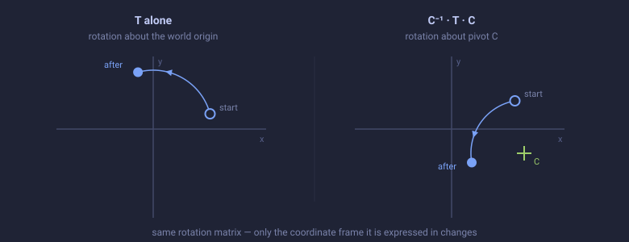

If matrix order of operations feels like trial and error, the problem is almost never the math. It is that the matrices are unnamed, so nothing tells you which coordinate space each one lives in. This page gives you one mental model and a small set of patterns. With those, you derive the order instead of guessing it.
Do not think of a matrix as "a thing you multiply." Think of every matrix as a device that moves a vector from one coordinate space into another: into a joint's rest space, into world space, into a parent's frame. A chain of matrices is then a trip through spaces, and the spaces tell you the order.
In Maya the trip always reads the same way. MMatrix is row-vector,
row-major: a point transforms as p′ = p · M, so in a product
A · B the matrix A is applied first. The leftmost matrix is the one that touches the vector
first. That means you read a chain left to right, exactly the order you write it in
code (a * b) and exactly the order Maya walks a transform hierarchy.
It helps to remember that an MMatrix is not abstract; it is what a transform
node collapses to: translate, rotate, scale, and joint orient folded into one object. When you multiply
two world matrices you are not doing algebra for its own sake, you are walking the DAG up or down the
rig.
The entire reason you must think about order is that multiplying transforms is not commutative: A · B ≠ B · A. Play with it. The grey shape is the original; the dots mark where each order pivots (blue for the selected order).
A rotation (matrix A) and a translation (matrix B) are the simplest pair that disagree. In one order the shape is rotated then slid; in the other it is slid then rotated, so it lands somewhere else entirely. Every order mistake you have ever made is some version of this picture.
Write an equation with the thing you know and the thing you want, then solve for the unknown using inverses. An inverse simply reverses the trip: A · A−1 = I.
Say you want to compute a local matrix from a world matrix:
// By calculating the local matrix with the world and parent inverse, we automatically
// take in to account whether the joint uses joint orient or not.
MMatrix localMatrix = inMatrix * restMatrix.inverse();Read it as algebra, not as an idiom. You know the node's world matrix (inMatrix) and its
parent's world matrix (restMatrix). The composition rule is
so you solve for the unknown by multiplying both sides on the right by the parent inverse:
That is exactly inMatrix * restMatrix.inverse(). Nothing was memorized; the order fell
out of the equation.
Going down the tree (you know the local, you want the world):
Going up the tree (you know the world, you want the local):
Whenever you catch yourself unsure which side the inverse goes on, ask: which space am I leaving, and which space am I entering? The matrix that takes you out of a space is that space's inverse.
You already know the basic offset: the transform that takes object A's space onto object B's space is
That is the "offset between those two objects" formula you trust.
Strip out the rotation and there is nothing new here. The offset between two things is "the second one, with the first undone". For numbers, undoing is subtracting; for matrices, it is multiplying by the inverse:
−A is the additive inverse of A and A−1 the multiplicative one, so both lines say the same thing: reach B, then undo A. Putting the offset back reverses it the same way:
Addition commutes, so with vectors you never notice which side the offset sits on: A + d = d + A. Matrix multiplication does not, and that is the whole reason order-of-operations trips people up. The arithmetic is identical; only the sides start to matter.
The more general and very common pattern is re-planting a rest-pose offset under a new parent. Here is the pattern applied to a leg:
MMatrix upLegToWorld = upLegRestToWorld * hipsRestToWorld.inverse() * hipsToWorld;Read the chain as a sentence, left to right:
upLegRestToWorld: start in the up-leg's rest pose (world space).* hipsRestToWorld.inverse(): move into the hips' space, so what
remains is the up-leg's rest offset relative to the hips.* hipsToWorld: re-apply that offset using the hips' current matrix.So the offset was captured in one pose and then carried by the current parent. The same three-step shape recurs for each joint down the chain: the lower leg under the up-leg, the foot under the lower leg, and so on. Once you can name the space after each multiplication, these long chains stop being opaque.
Watch a point take that trip. Rotate the parent and notice that the child's local offset is measured along the parent's rotated axes, not the world's. That is what "local, then parent" means.
This is the pattern people find hardest, so here is the intuition before the algebra.
A matrix can describe a coordinate system, not just a movement. The matrix
C is a whole set of axes: a position and an orientation. Think of C as the
frame's basis: it turns coordinates written in C's frame into world
coordinates. Then the sandwich is
and it says: "Apply old, but do it as if C were the entire
world." You never change old itself. You only change the frame it is measured
against.
Read it as a point's round trip (in Maya the applied order is left to right):
C−1: take the point out of the world and into C's
frame. Now C's origin is the origin, and C's axes are the axes.old: do the operation while you are standing inside C's frame.C: come back out to the world.Because steps 1 and 3 undo each other's frame change, the net effect is "the operation
old, done in C's coordinate system."
Which side the inverse sits on is the whole game. These two are not the same:
old in C's frame (the form above).old
in C's frame, which is the same as doing the operation in the mirrored frame.They are inverses of each other, since (C−1 old C)−1 = C−1 old−1 C. Choose the wrong side and your operation happens about the opposite centre, with the opposite orientation, which is exactly the trial-and-error this page is trying to kill.
Let the operation be a rotation R(θ), and let the frame C be a translation to a
pivot point P. Then C−1 slides the whole scene by −P so the pivot lands on the origin,
R(θ) spins about the origin, and C slides it back. Net result:
That is a rotation about P, built entirely from the same rotation matrix you already had. The other order, C · R(θ) · C−1, puts the inverse on the right, so the identical rotation comes out about the mirrored centre −P. Two pictures of the same idea:

Now feel it. Flip between the two conjugation orders, drag the pivot, then press Play the three steps to watch the round trip happen one multiply at a time.
The three steps are literal. Let C be a translation to the pivot P, and let the
operation be a rotation:
MMatrix C; // C is a translation to the pivot
C[3][0] = pivot.x;
C[3][1] = pivot.y;
C[3][2] = pivot.z;
p *= C.inverse(); // world -> pivot frame (the pivot is now the origin)
p *= rotation; // spin about the origin, which is the pivot
p *= C; // pivot frame -> worldThe rotation matrix never changes. Only the frame it is measured in does, and the pivot falls out as the centre. Keep that enter/modify/leave rhythm; now swap the pivot frame for a bind frame.
Here it is again, applied to a transform. C is a bind space rather than a pivot
point, but the enter/modify/leave shape is identical:
MMatrix worldToBind = ikRootToWorld.inverse() * flatFootBindToRoot.inverse();
footTarget *= worldToBind;
// ... scale the foot while it is expressed in the bind frame ...
footTarget *= worldToBind.inverse();Read the factors before the order. flatFootBindToRoot is not the foot's transform:
it is the foot's rest spot with its rotation dropped and its height zeroed, a flat frame standing
on the ground in the root's space (the rig's rest root is the identity, so the foot's rest
world position doubles as its root-space position). ikRootToWorld is the
root's world matrix. So C = flatFootBindToRoot * ikRootToWorld carries that bind frame
out to the world, and worldToBind is just C−1 written
out.
Because (A B)−1 = B−1 A−1, the two
factors trade places and each is inverted, which is why ikRootToWorld comes first and
flatFootBindToRoot last. The closing worldToBind.inverse() cancels the
frame change, leaving only the edit. In matrix terms this is the C−1 ·
(...) · C form, and the inverse is on the left, so the edit is done in
C's frame.
Deciding left vs. right for an inverse: an inverse that appears before the matrix you are changing (on its left) moves you into a space; an inverse that appears after it (on its right) undoes a matrix you are composing on top. When in doubt, name the spaces after each multiply and check that the output space of one matrix is the input space of the next. An illegal product (world space fed into something expecting local space) becomes obvious in the names.
Run these before you ever reach for trial and error.
1. The identity test. Plug in "no change": the current pose equals the rest
pose. Any offset or delta you compute should collapse to the identity matrix. If it does not, your order
is wrong. For example, in the pattern above, setting hipsToWorld equal to
hipsRestToWorld makes the whole chain reduce to
upLegRestToWorld.
2. The naming test. A matrix's name should describe the spaces it connects:
worldToLocal, hipsFromUpLeg, xyzSpaceToWorld. When the names
encode direction, a wrong product such as worldToLocal * worldToLocal is visibly illegal.
Most order-of-operations bugs are really naming bugs.
| When you want to... | Write (Maya, row-vector; left applies first) |
|---|---|
| Compose a child under its parent (local → world) | world = local · parent |
| Go from world back to a local matrix | local = world · parent−1 |
| Get the offset from object A to object B | A → B = Bworld · Aworld−1 |
| Re-apply a rest offset under the current parent | offsetrest = childRest · parentRest−1 then offsetrest · parentcurrent |
Do old in a frame C (C maps frame → world) |
new = C−1 · old · C |
Undo old in a frame C (the inverse conjugation) |
new = C · old · C−1 |
| Turn world into local for a non-parent reference | local = world · reference−1 |
Remember: the order is not a rule to memorize, it is the answer to the question "which space am I in now, and which space do I need next?"